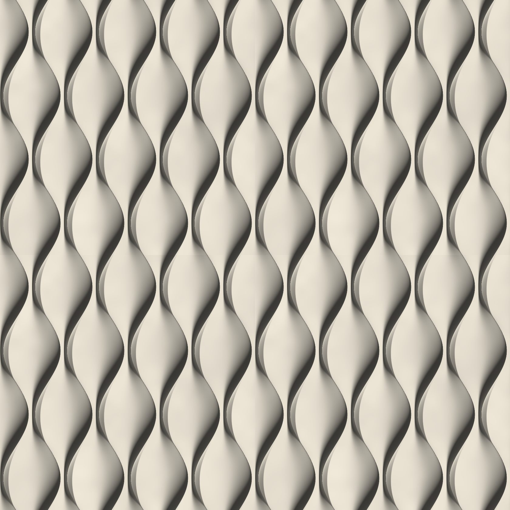
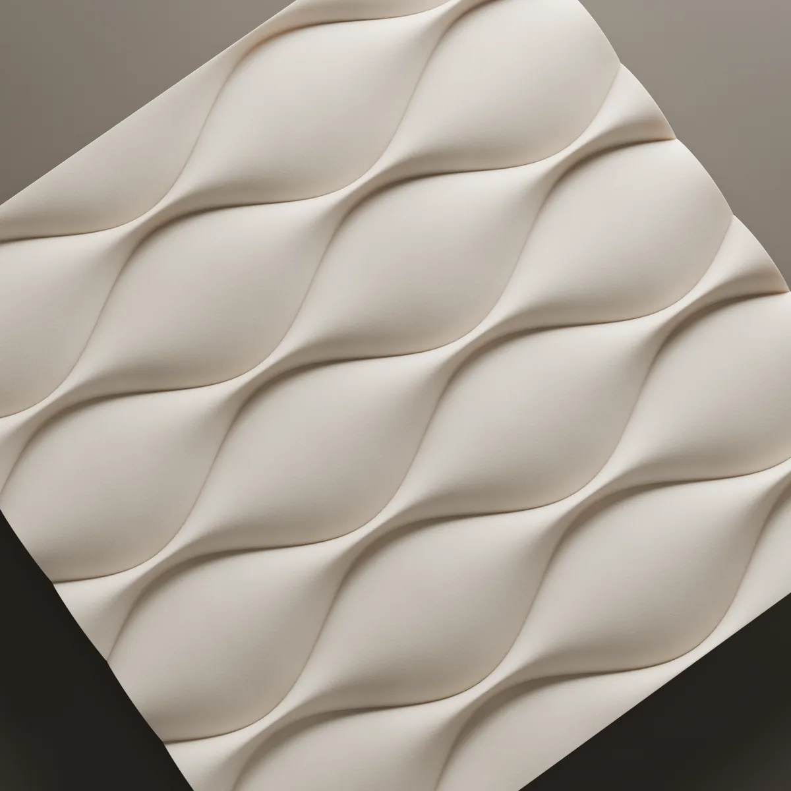
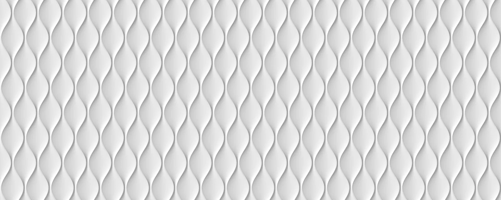
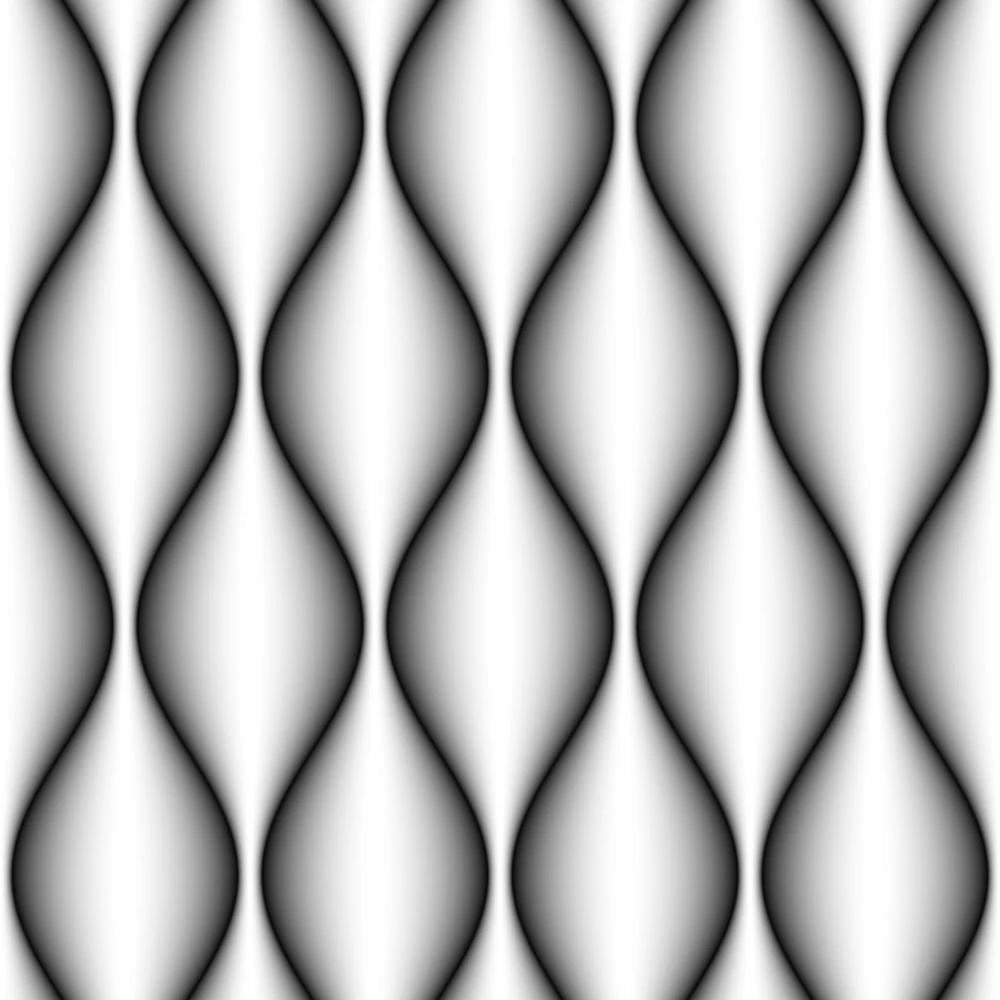

Antiphon
We drew vertical bands whose two edges wave against each other, so each band narrows and widens into a chain of almond shapes; where one band narrows, its neighbour widens.

- Size
- 600 × 600 mm
- Relief
- 15 mm
- Layout
- Continuous field
- Material
- Lumina PMAG™ (polymer-modified composite gypsum)
- Surface
- Paint-ready, or with an artisan finish



The pattern
An antiphon is a chant sung by two choirs in answer to each other. The surface works the same way: the two edges of each band curve in opposite directions, so the band pinches in one place and swells in the next. The neighbouring band follows half a step behind, widening where the first one narrows.
The relief reaches 15 mm. The middle of each almond is the highest point of the surface and the grooves where bands meet are the deepest; every transition is a soft curve, never a hard edge.
How it reads in light
The image at the top of the page is in live light. With the light at the side, one flank of each almond catches it and the other falls into shadow, and the wall reads as a vertical pulse. As the light turns head-on the shadows shorten and the surface settles into a pale, gentle wave.
On the wall
Antiphon is designed as a 600 × 600 mm panel with its bands upright. Laid side by side and stacked, the bands run across the panel edges unbroken, passing from one panel into the next, and the wall reads as a single surface. Where the pattern is cut at the edges of the wall is set out on the layout drawing.
To see how this design would sit on your wall, send the wall dimensions.